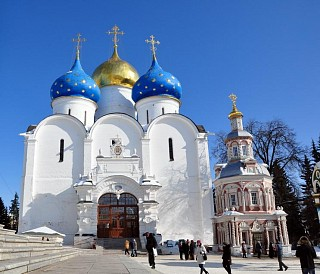

Успенский собор
-

- Успенский собор
Успенский собор является архитектурным центром Троице-Сергиевой Лавры. Он уступает в старшинстве знаменитому Троицкому собору, но и своим местоположением и строгой величавостью возглавляет лаврскую группу зданий. История его сооружения осталась, к сожалению, в значительной части невыясненной.
Известно только то, что к середине XVI века Троицкий монастырь сделался многолюдным, богатым и славным на всю Русь. Вместе с тем не было еще в его стенах храма, который отобразил бы своей монументальностью достоинство обители и смог бы вмещать тысячи богомольцев, стекавшихся в дни празднеств. Царь Иван Грозный, с чьим именем связано обширное храмостроительство в нашей стране (именно в его правление воздвигнуты Никоновская и Сошественская церкви Лавры), был горячим почитателем преподобного Сергия Радонежского, очень любил, часто посещал и одаривал вкладами монастырь и решил украсить обитель подобающим ее значению зданием. Была расчищена и освобождена от деревянных строений громадная площадь между Троицким собором и стенами. И год начала постройки, и имена зодчих утрачены для наших дней; освящение собора состоялось уже во второй год царствования Феодора Иоанновича, и так как столь грандиозное здание не могло быть несомненно возведено в короткий срок, то приходится заключить, что сооружение собора падает в основном на последние годы правления Ивана IV. Можно полагать, что собор достраивался на средства царя Феодора и при его постоянном внимании к такому богоугодному делу. Поэтому боковые алтари Успенского собора и посвящены тем святым, которым тезоименитствовала благочестивая чета. 15 августа 1585 г., в Успеньев день, митрополит Дионисий в присутствии Феодора и Ирины совершил торжественный чин освящения. Русские зодчие и каменных дел мастера тщательно скопировали (за небольшими отступлениями) Московский Успенский собор. Такой же тяжеловесный куб, такие же строгие, расчлененные пилястрами на три или четыре части, фасады стен. О массивности собора свидетельствуют его размеры: длина и ширина (со стенами) соответственно 19 саж. и 13 саж.; высота до кровли 10 саж. Отсутствие украшений, обычно мешающих восприятию, усугубляет впечатление необычайной величественности. Собор пятиглавый: первоначально главы были полусферическими, а позднее им придали форму луковиц. В описи монастыря, произведенной в 1641 г., говорится, что «церковь Успения Пречистые Богородицы камена, о пяти верхах, главы обиты немецким железом, а на средней главе крест золочен». В XVIII веке средняя глава была покрыта листовым червонным золотом. Впоследствии, в самом начале XIX века эту главу отделали вызолоченной медью, а остальные четыре — голубой краскою и украсили медными звездами разной величины. Так и выглядит в настоящее время вершина собора. Внушительность и строгий облик Успенского собора создаются главным образом прекрасной простотой его стен. Сложенные из кирпича и выкрашенные в белый цвет, лишенные пристроек и дополнений, эти стены восхищают современника не менее, чем архитектурная замысловатость позднейших периодов.